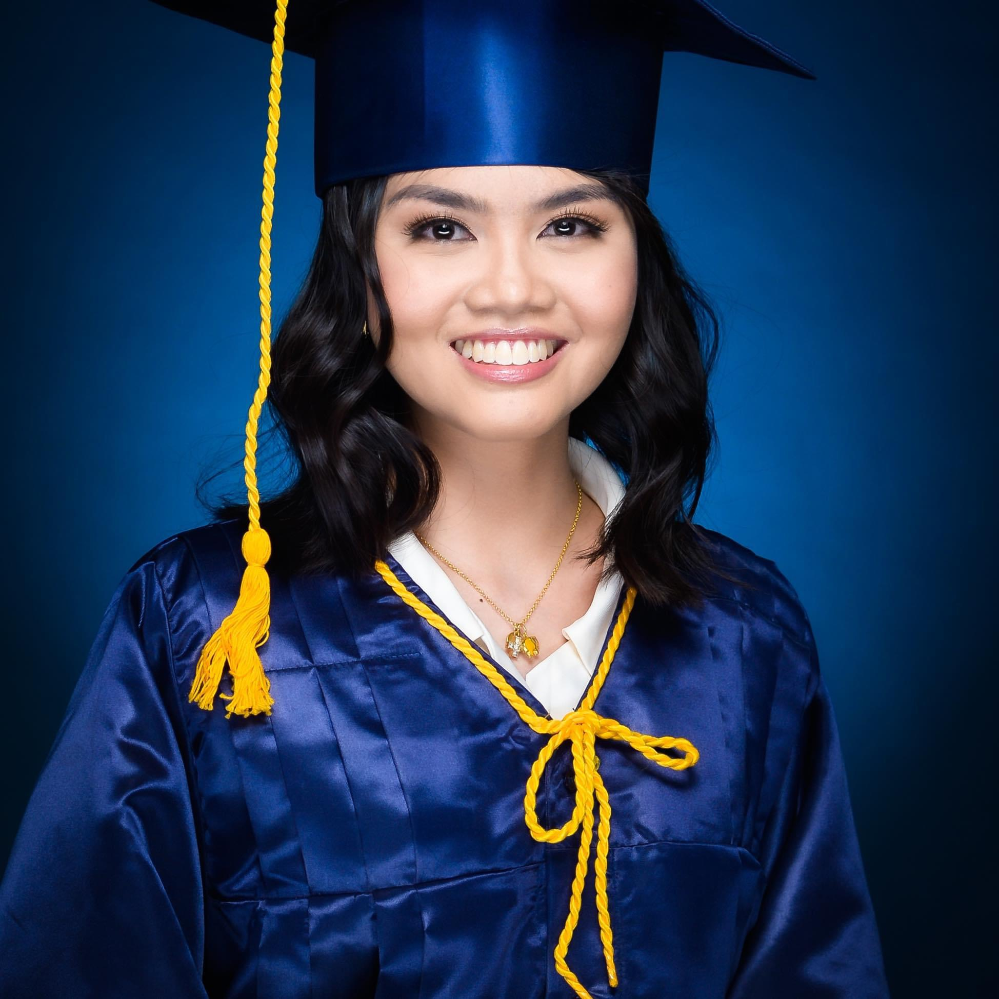

Christine Jean S. Agad - Bagwislaya Class of 2020
Which location in CRC is most memorable to you?
"Our batch is the first-ever batch in CRC. We witnessed the evolution of our campus into what it is now.
One thing I will never forget about my high school years is our old campus at Caraga State University.
Although it felt isolating without other batches or seniors to guide us, we had our own fun in our little world,
watching each other grow through the years"
Which PSHS-CRC activities did you enjoy the most?
"Studying in PSHS can be stressful, but I appreciated the variety of extracurricular activities like journalism and
sports events. The activity I enjoyed the most was the yearly Intramurals. It allowed me to play sports with my batchmates,
cheer for them, and engage in my favorite sports"
In the future, what can you give back to your alma mater?
"With my future research career, I hope to bring knowledge from expeditions to inspire more students, especially in
PSHS-CRC, to pursue wildlife research and conservation. High school ignited my passion for fieldwork and wildlife, guiding me
toward where I see myself in the coming years. It is overwhelming to think about the future, but I encourage students not to
be scared and to explore their paths"
Shaina Delia G. Tomaneng - Alas Assurgo Class of 2021
Which location in CRC is most memorable to you?

"The makeshift volleyball court in PSHS-CRC is the most memorable place for me. In Grades 8 to 9, before we had a proper court, we had a net set up in an open field near the gate. It became a gathering place for students, whether playing volleyball or just hanging out. The sunset view from there was beautiful, and I made many memories, even filming music video projects."
Which PSHS-CRC activities did you enjoy the most?
"The PSHS-CRC activity I enjoyed the most was the Intramurals season at the end of each year.
The unity and camaraderie of my batch during this time were remarkable. I learned a new sport, ping-pong, and even
represented the batch, winning 3rd place. It was a growing experience, and the thrill of Intramurals season is something
I still miss. I also participated in my first battle of the bands competition, winning champions. The support from
batchmates and the enjoyment in the crowd are irreplaceable"
How did your experience at PSHS-CRC shape your career or life path?
"PSHS-CRC has shown me that one can have multiple passions, and there are no limits to what you can do. Although my
initial dream was to become an astronaut, my experience in the field of Biology during senior high opened up the
possibility of pursuing a career in medicine. I am now a pre-med student at La Salle, aiming to continue for the next six
years. PSHS taught me to make the most of opportunities and connections, shaping my identity"
In the future, what can you give back to your alma mater?
"I am grateful for PSHS because it gave me a life I never expected. To give back, I believe using the
skills and talents learned as PSHS scholars in the field of STEM to help others, especially those in
underprivileged positions, is crucial. It is essential to uplift society, especially in our country, and
ensure that our actions benefit the Filipino people. As PSHS graduates, our commitment to truth and service
should guide us in making a positive impact on the world"
 PSHS-CRC
PSHS-CRC